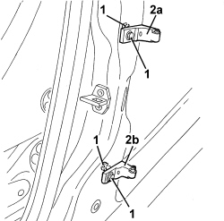

7010A24 REAR SIDE DOOR HINGES (BOLTED) - REPAIR OR REPLACE WITH DOOR REMOVED
- Path
- Procedures > 70 FITTINGS > 7010 PASSENGER COMPARTMENT REAR SIDE DOORS > 7010A REAR SIDE DOOR ASSEMBLY > 7010A24 REAR SIDE DOOR HINGES (BOLTED) - REPAIR OR REPLACE WITH DOOR REMOVED
- Kind
- repair procedure (removal / refitting; the operation number is the code)
- Applies to
- all engines; all production periods
- Interactive page
- https://sloeber94.github.io/elrnDB/alfa/159/en/#/939011163
Applies to: all engines; all production periods
 Removing
Removing
 Refitting
RefittingOp. 7040L40 FRONT DOOR RUNNING BOARD (ONE), LEFT OR RIGHT - R.R.
Op. 7050A20 ONE-PIECE REAR SEAT CUSHION - R.R.
Op. 7040L44 REAR DOOR RUNNING BOARD (ONE), LEFT OR RIGHT - R.R.
Op. 7040H36 CENTRE PILLAR LOWER ELEMENT (ONE), LEFT OR RIGHT - R.R
1. Undo the bolts fixing the half hinges to the bodyshell.
2. Remove the half hinges (2a) and (2b).

Applies to: all engines; all production periods
Refitting
Removing- Check that the half hinges are not damaged.
- Position the hinges and screw in the bolts without tightening them.
- Refit the components removed to access the hinge fixing bolts.
Op. 7040H36 CENTRE PILLAR LOWER ELEMENT (ONE), LEFT OR RIGHT - R.R
Op. 7040L44 REAR DOOR RUNNING BOARD (ONE), LEFT OR RIGHT - R.R.
Op. 7050A20 ONE-PIECE REAR SEAT CUSHION - R.R.
Op. 7040L40 FRONT DOOR RUNNING BOARD (ONE), LEFT OR RIGHT - R.R.
Topics linked from this page (5)
- 7010A14 REAR SIDE DOOR - ADJUST CENTERING AND MOULDING - INCLUDES ADAPTATION OF HINGES AND SEALS ON DOOR COMPARTMENT
- 7040H36 CENTRE PILLAR LOWER ELEMENT (ONE), LEFT OR RIGHT - R.R
- 7040L40 FRONT DOOR RUNNING BOARD (ONE), LEFT OR RIGHT - R.R.
- 7040L44 REAR DOOR RUNNING BOARD (ONE), LEFT OR RIGHT - R.R.
- 7050A20 ONE-PIECE REAR SEAT CUSHION - R.R.